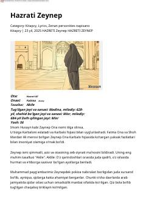

HZHazrati Zeynepning hayoti va Karbalo fojiasidagi mardona kurashi haqida tarixiy asar.
Ushbu asar Payg'ambarimiz Muhammad (s.a.v) nabiralari Hazrati Zeynepning hayoti, Karbalo fojiasidagi ishtiroki va uning zolim hukmdorlar qarshisidagi mardona nutqlari haqida hikoya qiladi. Kitobda Zeynep onaning shaxsiyati, uning Ahli Bayt himoyasidagi o'rni va tarixiy ahamiyati yoritilgan.